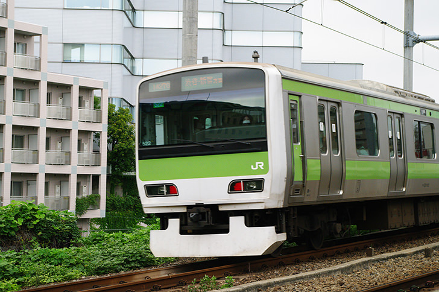

トップページ
開発日誌
販売ページ
自己紹介
IoTrain Lab へようこそ！

Tweets by IoTrain
YouTube
IoTrainとは？
IoT（Internet of Things）と 鉄道模型（train）を融合させた製品の商標です
IoTrain製品は車両に搭載する装置のほか、信号機、踏切、更にはマスコン運転台の販売も検討しております
修理
こちらへ進んでくださいー＞
修理依頼ページ
✉ お問い合わせ ✉
iotrain.lab@gmail.com